Object Detection — YOLO가 어떻게 그렇게 빠른가
참고 교재: Practical Deep Learning for Cloud, Mobile, and Edge (Anirudh Koul et al., O'Reilly)
1-1. 문제 제기
상황: 공장 CCTV로 실시간 안전 모니터링을 하려고 합니다. 그런데 GPU 서버에 영상을 보내서 분석하면 어떤 문제가 생길까요?
[클라우드 분석의 현실적 문제]
카메라 → 인터넷 → GPU 서버 → 결과 → 카메라
지연 시간: 0.5~2초 (이미 사고가 난 후)
네트워크 비용: 24시간 영상 전송 = 막대한 트래픽
보안: 공장 내부 영상이 외부로 전송됨해결 방향: 카메라 옆에 작은 컴퓨터(엣지 디바이스)를 두고 현장에서 바로 분석
[엣지 컴퓨팅 구조]
카메라 → [Jetson Nano / 라즈베리파이] → 즉시 결과
↑
모델이 여기서 실행
지연 없음, 네트워크 불필요핵심 질문: GPU가 없는 작은 컴퓨터에서 실시간 탐지가 가능할까?
→ 정확도 vs 속도의 트레이드오프를 어떻게 해결할 것인가?
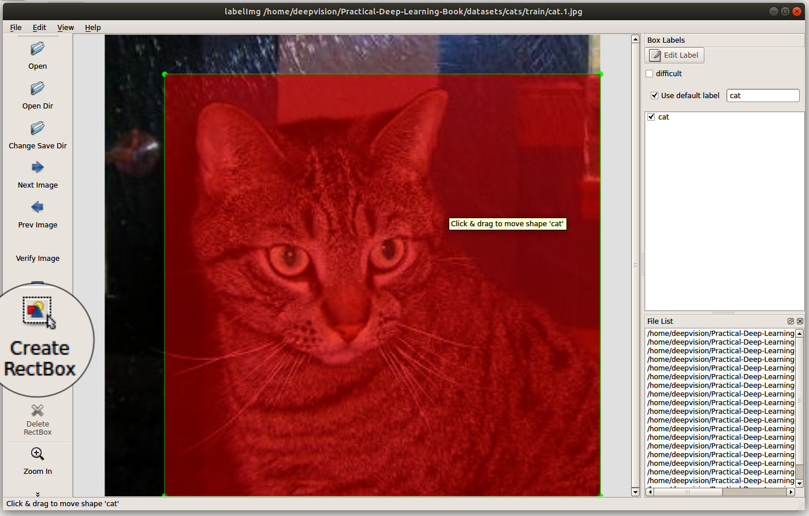
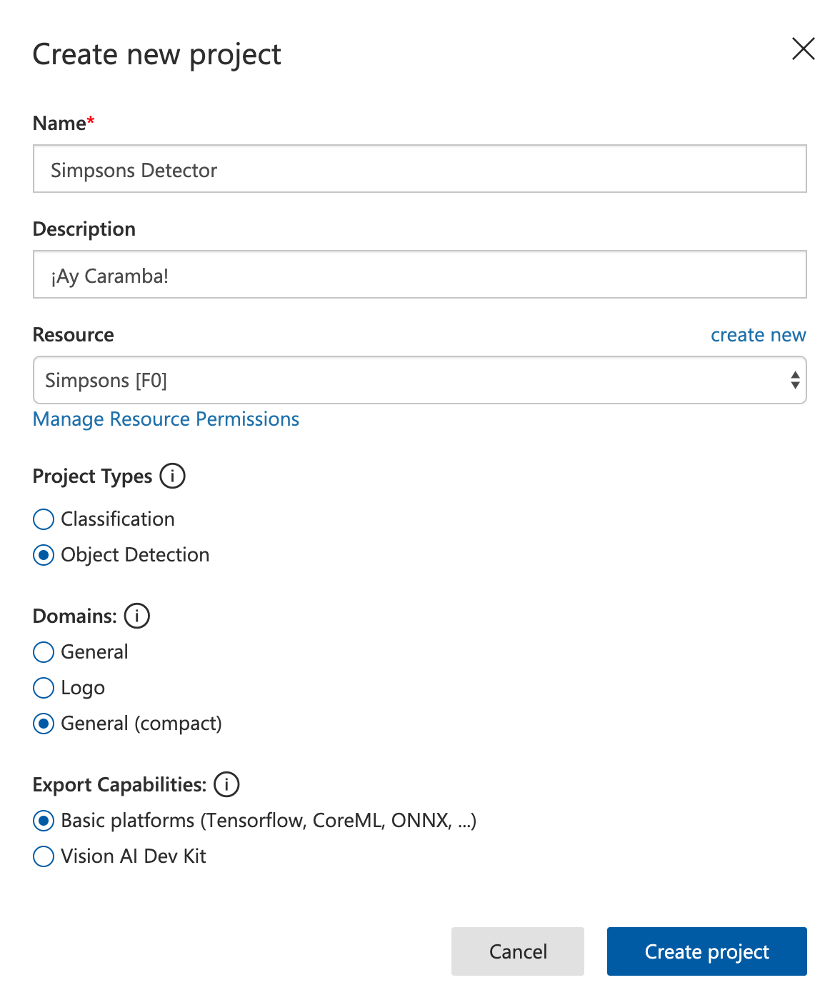
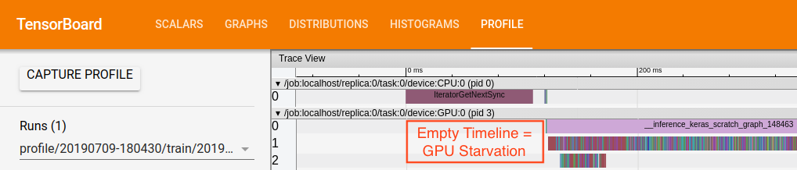
1-2. 이론
① Object Detection의 발전: 왜 YOLO인가
📖 Practical Deep Learning Appendix A — CNN 기본 구조 / Ch.14 — CNN 기반 탐지 모델 발전 흐름
[2-Stage Detector: R-CNN 계열]
입력 이미지
↓
Region Proposal (후보 영역 추출) ← 1단계: 어디를 볼까?
↓
각 영역에서 분류 + 위치 보정 ← 2단계: 무엇이 있나?
정확도: 높음
속도: 느림 (2~10 FPS) → 실시간 불가
[1-Stage Detector: YOLO 계열]
입력 이미지
↓
단 한 번의 추론으로 위치 + 클래스 동시 예측
정확도: 약간 낮음
속도: 빠름 (30~100+ FPS) → 실시간 가능YOLO(You Only Look Once): 이미지를 한 번만 보고 모든 객체를 동시에 예측합니다. 실시간 산업 안전 모니터링에는 YOLO 계열이 사실상 표준입니다.
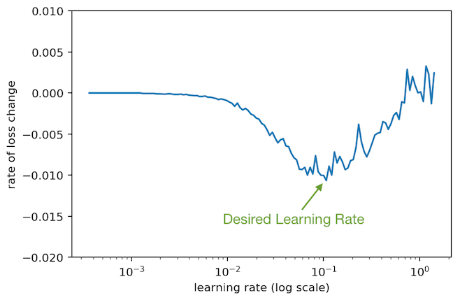
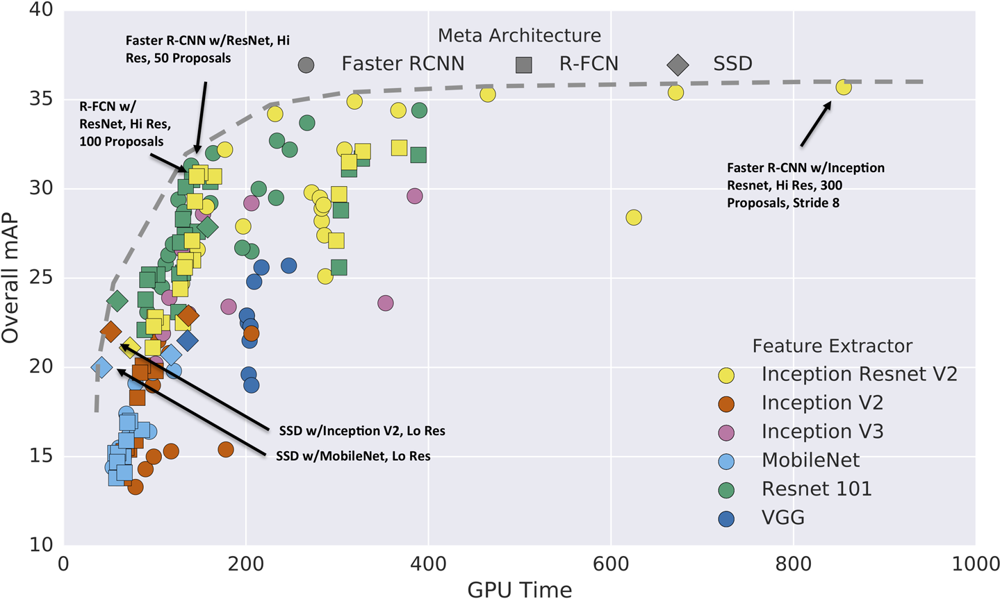
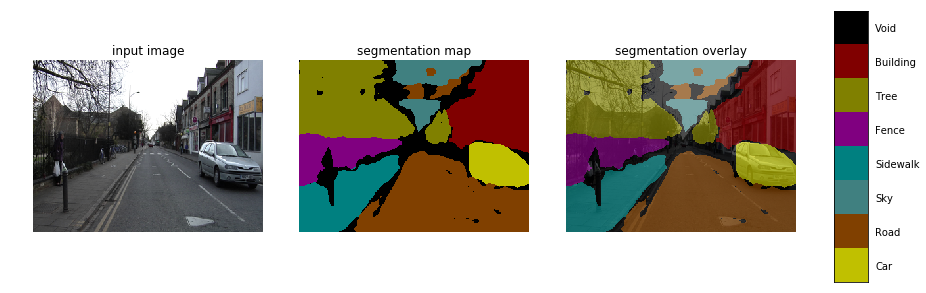
② YOLOv8 구조 직관
📖 Practical Deep Learning Ch.14 — Backbone/Neck/Head 구조 / Ch.6 — 추론 최적화와 모델 경량화
[YOLOv8 구조]
입력 이미지 (640×640)
↓
┌─────────────────────────────────────┐
│ Backbone (CSPDarknet) │
│ 역할: 이미지에서 특징 추출 │
│ → "이미지 안에 무엇이 있는지 감지" │
└──────────────┬──────────────────────┘
↓
┌─────────────────────────────────────┐
│ Neck (FPN + PAN) │
│ 역할: 다양한 크기의 특징 결합 │
│ → "멀리 있는 것도, 가까운 것도 탐지"│
└──────────────┬──────────────────────┘
↓
┌─────────────────────────────────────┐
│ Head (Decoupled) │
│ 역할: 위치(bbox) + 클래스 동시 예측 │
│ → "어디에, 무엇이, 얼마나 확실한가" │
└─────────────────────────────────────┘YOLOv8 모델 크기 계열:
YOLOv8n (nano) → 3.2M 파라미터, 최고 속도, 낮은 정확도 ← 엣지용
YOLOv8s (small) → 11.2M 파라미터, 빠름, 중간 정확도
YOLOv8m (medium) → 25.9M 파라미터, 중간 속도, 높은 정확도
YOLOv8l (large) → 43.7M 파라미터, 느림, 더 높은 정확도
YOLOv8x (xlarge) → 68.2M 파라미터, 최저 속도, 최고 정확도 ← 서버용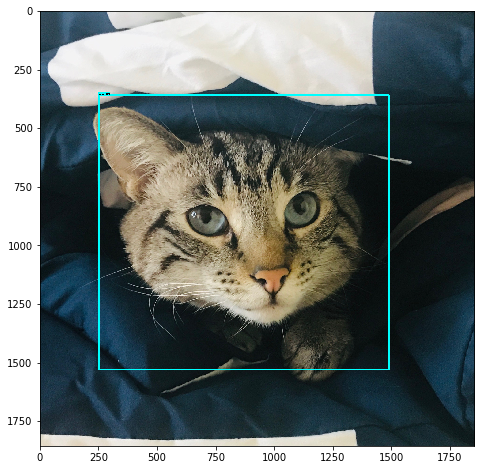
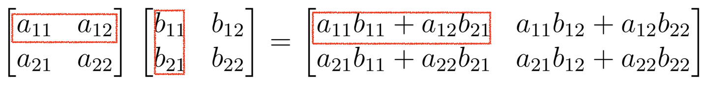
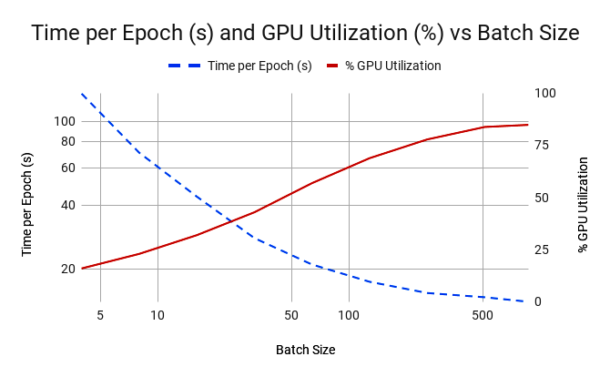
③ 경량화의 핵심: Depthwise Separable Convolution
📖 Practical Deep Learning Appendix A — 일반 Convolution 연산량 분석 / Ch.6 — MobileNet의 Depthwise Separable Convolution
[일반 Convolution 연산량]
입력: H × W × C_in (이미지 크기 × 채널 수)
필터: K × K × C_in × C_out
연산량 = H × W × K² × C_in × C_out
예) 224×224 이미지, 3×3 필터, C_in=64, C_out=128
= 224 × 224 × 9 × 64 × 128 = 약 3.7억 번 연산[일반 Conv] [Depthwise Separable Conv]
하나의 필터가 Depthwise Conv: 채널별로 따로 적용
모든 채널을 한 번에 + Pointwise Conv(1×1): 채널 결합
처리
연산량 감소: 약 1/8 ~ 1/9 수준
정확도 손실: 경미 (1~2%)일반 Convolution vs Depthwise Separable Convolution 코드 비교:
import torch.nn as nn
# 일반 Convolution
standard_conv = nn.Conv2d(
in_channels=64, out_channels=128,
kernel_size=3, padding=1
)# Depthwise Separable Convolution (MobileNet 방식)
depthwise = nn.Conv2d(
in_channels=64, out_channels=64,
kernel_size=3, padding=1,
groups=64 # groups=in_channels → 채널별 독립 적용
)
pointwise = nn.Conv2d(
in_channels=64, out_channels=128,
kernel_size=1 # 1×1 conv로 채널 수 조정
)- Depthwise(
groups=64): 각 채널마다 따로 3×3 필터를 적용. "공간만" 처리 - Pointwise(
kernel_size=1): 1×1 필터로 채널을 섞어 줌. "채널만" 처리 - 둘을 합쳐야 일반 Conv와 비슷한 역할이지만, 연산량은 약 1/8~1/9로 줄어듦
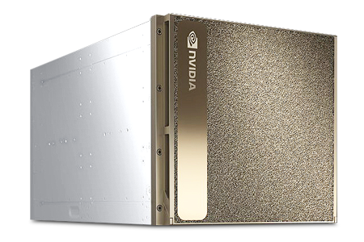
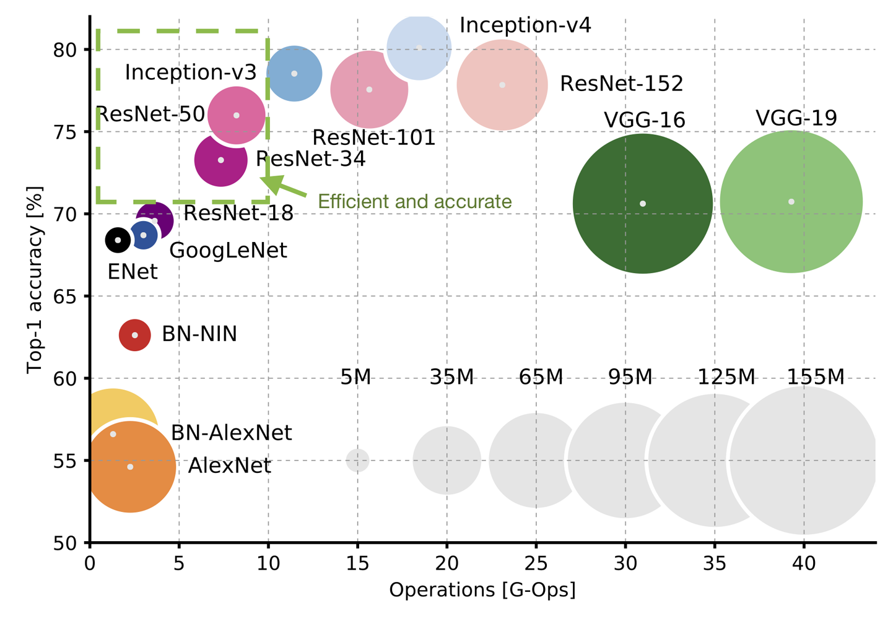
실무 판단 기준: 엣지 디바이스 목표 → YOLOv8n 또는 MobileNet 기반 모델 선택. 서버 배포 목표 → YOLOv8m 이상으로 정확도 우선. 엣지 + 정확도 모두 중요 → Quantization 적용.
1-3. Claude Code 시연
시연 포인트: 모델 크기에 따른 속도-정확도 트레이드오프를 숫자로 확인하는 과정에 집중하세요.
YOLOv8로 안전모 탐지 데모를 만들어줘.
- ultralytics 라이브러리 사용
- 모델 3개 비교: YOLOv8n, YOLOv8s, YOLOv8m
- 동일한 테스트 이미지로 각 모델 추론
- 결과: 각 모델의 추론 시간(ms), 탐지 수, bbox 시각화, 속도 vs mAP 비교시연 흐름: YOLOv8 모델 3개 로드 → 추론 실행 → 시간 측정 → 비교 그래프
시연 후 추가 질문: "모델 크기를 반으로 줄이면 속도가 두 배가 되는 건 아닌데, 왜 그런 거야?"
1-4. 실습
| 모델 | 파라미터 수 | 추론 시간(ms) | 탐지율 | 선택 기준 |
|---|---|---|---|---|
| YOLOv8n | 3.2M | 측정 | 측정 | 엣지 디바이스 |
| YOLOv8s | 11.2M | 측정 | 측정 | 중간 사양 |
| YOLOv8m | 25.9M | 측정 | 측정 | 서버 |
STEP 1 테스트 이미지 준비
import time, numpy as np, matplotlib.pyplot as plt
from ultralytics import YOLO
test_image = np.random.randint(0, 255, (640, 640, 3), dtype=np.uint8)STEP 2 3가지 모델 로드
models = {
'YOLOv8n': YOLO('yolov8n.pt'),
'YOLOv8s': YOLO('yolov8s.pt'),
'YOLOv8m': YOLO('yolov8m.pt'),
}STEP 3 추론 시간 측정
results_summary = {}
for model_name, model in models.items():
_ = model(test_image, verbose=False) # 워밍업
times = []
for _ in range(10):
start = time.time()
result = model(test_image, verbose=False)
elapsed = (time.time() - start) * 1000
times.append(elapsed)
avg_time = np.mean(times)
n_detections = len(result[0].boxes) if result[0].boxes else 0STEP 4 결과 시각화
results_summary[model_name] = {'avg_time_ms': avg_time, 'n_detections': n_detections}
print(f"{model_name}: {avg_time:.1f}ms, 탐지 수: {n_detections}")
# TODO: 속도 vs 탐지 수 막대그래프성공 체크리스트: n < s < m 순서로 추론 시간이 커지면 성공.
Action Recognition — 사람의 행동을 숫자로 읽는다
참고 교재: Practical Machine Learning for Computer Vision (Valliappa Lakshmanan et al., O'Reilly)
2-1. 문제 제기
섹션 1에서 배운 것: YOLO로 "무엇이 있는가(객체)"를 탐지
이번 섹션의 질문: "그 사람이 무엇을 하고 있는가(행동)"를 인식할 수 있을까?
[탐지와 인식의 차이]
Object Detection: [사람] [안전모] [지게차] ← 무엇이 있는가
Action Recognition: [사람이 난간 없이 높은 곳 작업 중] ← 무엇을 하는가제조 현장의 위험 행동 예시:
① 2인 1조 작업 규정 위반 → 혼자 중량물 이동
② 안전 난간 없는 고소 작업
③ 보호구 미착용 상태로 위험 구역 진입
④ 허리 굽힘 각도 위험 수준 (근골격계 질환)핵심 질문: CCTV 영상에서 이런 위험 행동을 자동으로 감지할 수 있을까?
2-2. 이론
① 비디오 이해의 접근법: 왜 골격 기반인가
📖 Practical ML for Computer Vision Ch.11 — 비디오 분류 접근법 비교
[픽셀 기반 접근 (3D CNN / Two-Stream)]
장점: 배경 정보까지 활용, 높은 정확도
단점: 연산량 매우 큼 → 엣지 불가
사생활 침해 우려 (얼굴, 개인 식별 가능)
조명·카메라 각도 변화에 취약
[골격 기반 접근 (Skeleton / Keypoint)]
장점: 연산량 적음 → 엣지 가능
사생활 보호 (픽셀 없이 좌표만 사용)
조명·배경 변화에 강건
해석 가능 (어떤 관절이 이상한지 설명 가능)
단점: 가려짐(occlusion)에 취약제조 현장 선택 기준: 24시간 운영, 엣지 배포, 개인정보 보호 요건 → 골격 기반 방식이 현실적인 선택
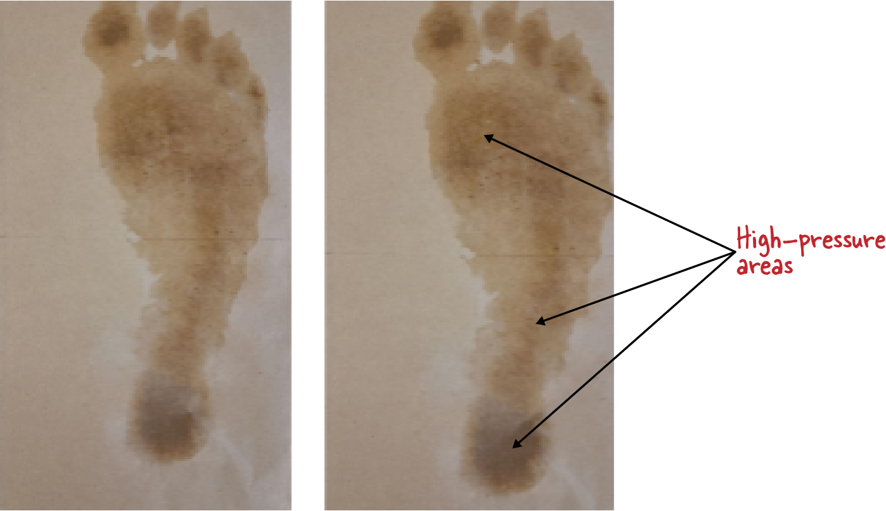
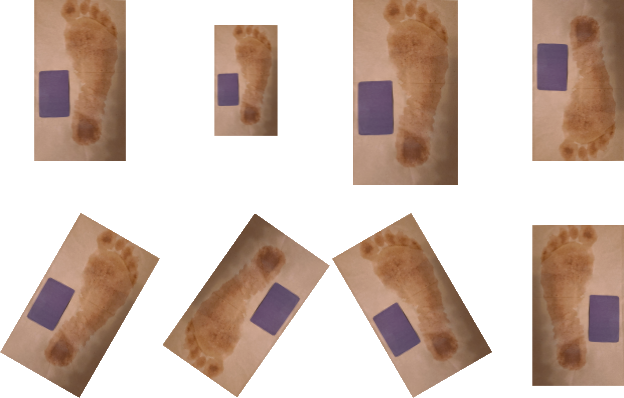
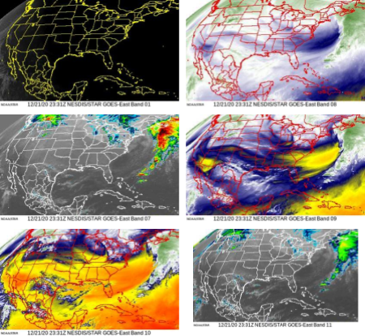
② MediaPipe로 골격 추출
📖 Practical ML for Computer Vision Ch.11 — 포즈 추정 원리 / Ch.5 — 비디오 데이터 키포인트 추출
MediaPipe Pose는 이미지/영상에서 33개의 키포인트 좌표를 실시간으로 추출합니다.
[MediaPipe 33개 키포인트]
0 코
1·2·3·4·5·6·7·8 얼굴
11·12 어깨
13·14 팔꿈치 15·16 손목
17·18·19·20·21·22 손
23·24 엉덩이
25·26 무릎 27·28 발목
29·30·31·32 발키포인트 추출 코드:
import mediapipe as mp, cv2, numpy as np
mp_pose = mp.solutions.pose
def extract_keypoints(frame):
"""단일 프레임에서 키포인트 추출"""
with mp_pose.Pose(
min_detection_confidence=0.5,
min_tracking_confidence=0.5
) as pose:
rgb = cv2.cvtColor(frame, cv2.COLOR_BGR2RGB)
results = pose.process(rgb)
if results.pose_landmarks:
kp = np.array([
[lm.x, lm.y, lm.visibility]
for lm in results.pose_landmarks.landmark
]) # shape: (33, 3)
return kp
return np.zeros((33, 3))min_detection_confidence=0.5: 50%보다 확신이 낮으면 무시- x, y 좌표는 0~1 사이 정규화된 값 (이미지 크기에 영향 없음)
- MediaPipe는 CPU만으로도 실시간(30 FPS) 가능
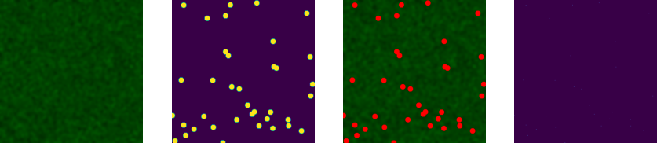
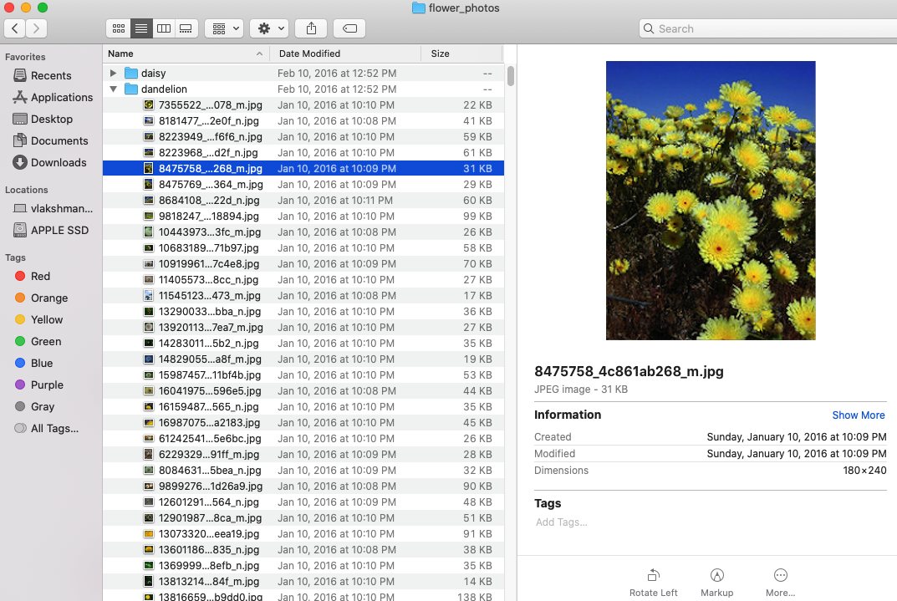

③ 키포인트 시퀀스를 LSTM으로 분류
📖 Practical ML for Computer Vision Ch.11 — 시계열 키포인트 분류
세션 2에서 배운 LSTM 구조를 그대로 재활용합니다.
[행동 인식 파이프라인]
비디오 프레임 시퀀스
↓ MediaPipe
키포인트 시퀀스 [30 × 99] (30프레임 × 33관절 × 3좌표)
↓ LSTM
행동 분류 결과 ["정상 작업" / "위험 행동A" / "위험 행동B"]LSTM 행동 분류 모델:
import tensorflow as tf
model = tf.keras.Sequential([
tf.keras.layers.LSTM(64, input_shape=(30, 99),
return_sequences=True),
tf.keras.layers.Dropout(0.3),
tf.keras.layers.LSTM(32),
tf.keras.layers.Dense(32, activation='relu'),
tf.keras.layers.Dense(3, activation='softmax') # 행동 클래스 수
])
model.compile(
optimizer='adam',
loss='sparse_categorical_crossentropy',
metrics=['accuracy']
)input_shape=(30, 99): 30프레임 × 99특징(33관절×3좌표)Dense(3, activation='softmax'): 클래스 확률 3개 출력sparse_categorical_crossentropy: 라벨이 0, 1, 2 정수일 때 사용
슬라이딩 윈도우 시퀀스 생성:
def create_sequences(keypoint_data, labels, window_size=30, step=15):
"""키포인트 시계열 → LSTM 입력 시퀀스"""
X, y = [], []
for i in range(0, len(keypoint_data) - window_size, step):
X.append(keypoint_data[i:i+window_size].reshape(window_size, -1))
y.append(labels[i+window_size])
return np.array(X), np.array(y)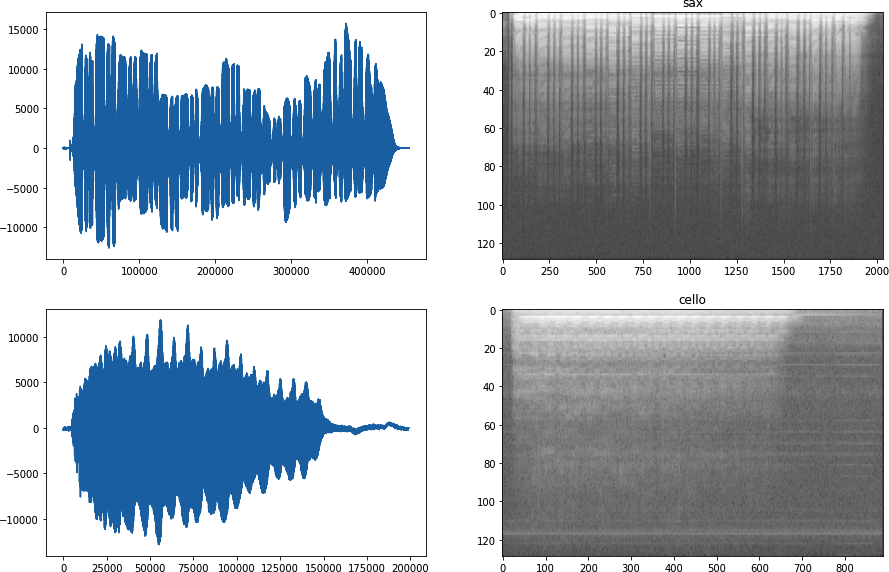
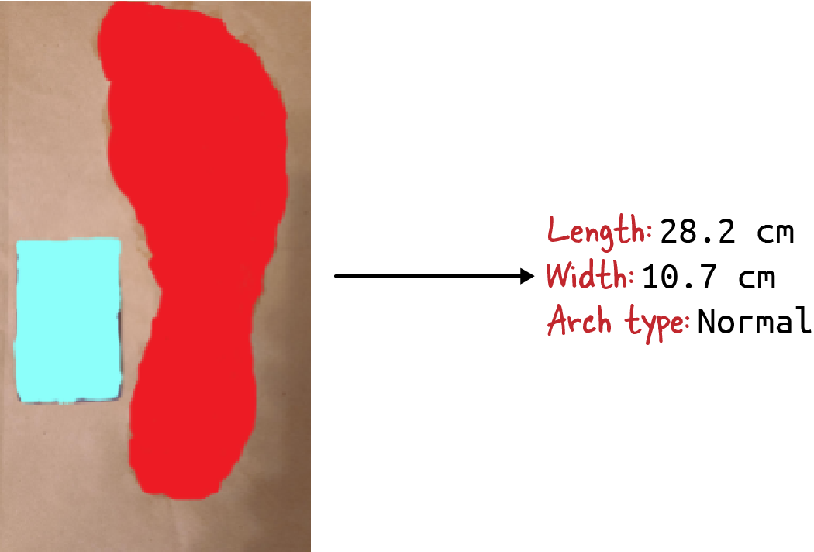
실무 판단 기준: 위험 행동은 종류가 적고 패턴이 명확함 → 클래스 수 3~5개로 시작. 데이터가 부족할 경우 → 정상 행동만 학습한 Autoencoder로 이상탐지 (세션 2 섹션 1 재활용).
2-3. Claude Code 시연
시연 포인트: MediaPipe로 키포인트를 추출하고 LSTM 입력으로 변환하는 연결 과정에 집중하세요.
작업자 위험 행동 인식 모델을 만들어줘.
- MediaPipe Pose로 웹캠/영상에서 키포인트 추출
- window_size=30 프레임으로 슬라이딩 윈도우 생성
- LSTM(64) → Dropout(0.3) → LSTM(32) → Dense(3, softmax)
- 행동 클래스: ["정상작업", "허리위험각도", "고소작업위험"]
- 합성 데이터로 학습시연 후 추가 질문: "카메라 각도가 정면이 아닌 측면에서 찍히면 키포인트가 어떻게 달라지고, 이걸 어떻게 대응해야 해?"
2-4. 실습
| 실험 | window_size | 지연 시간 | 정확도 | 관찰 포인트 |
|---|---|---|---|---|
| A | 15 프레임 | 0.5초 | 측정 | 빠른 반응, 짧은 맥락 |
| B | 30 프레임 | 1.0초 | 측정 | 기본값 |
| C | 60 프레임 | 2.0초 | 측정 | 긴 맥락, 느린 반응 |
STEP 1 합성 키포인트 데이터 생성
import numpy as np, tensorflow as tf
from sklearn.model_selection import train_test_split
np.random.seed(42)
N_SAMPLES, N_CLASSES, N_KEYPOINTS = 300, 3, 99
def generate_synthetic_data(window_size, n_samples=N_SAMPLES):
X, y = [], []
for cls in range(N_CLASSES):
for _ in range(n_samples // N_CLASSES):
base = np.random.randn(window_size, N_KEYPOINTS) * 0.1
if cls == 1: base[:, 23*3:25*3] += np.linspace(0, 1, window_size)[:, None]
elif cls == 2: base[:, 1::3] -= 0.5
X.append(base); y.append(cls)
return np.array(X, dtype=np.float32), np.array(y)STEP 2 LSTM 모델 빌더
def build_model(window_size, n_classes=N_CLASSES):
return tf.keras.Sequential([
tf.keras.layers.LSTM(64, input_shape=(window_size, N_KEYPOINTS),
return_sequences=True),
tf.keras.layers.Dropout(0.3),
tf.keras.layers.LSTM(32),
tf.keras.layers.Dense(n_classes, activation='softmax')
])STEP 3 세 가지 window_size로 실험
results = {}
for window_size in [15, 30, 60]:
X, y = generate_synthetic_data(window_size)
X_train, X_test, y_train, y_test = train_test_split(X, y, test_size=0.2, random_state=42)
model = build_model(window_size)
model.compile(optimizer='adam', loss='sparse_categorical_crossentropy', metrics=['accuracy'])
# TODO: 학습 → 평가 → 추론 시간 측정성공 체크리스트: window_size가 커질수록 정확도가 약간 오르고 추론 시간도 늘어나면 성공.
CCTV 안전 위반 탐지 통합 실습
참고 교재: Practical Machine Learning for Computer Vision (Valliappa Lakshmanan et al., O'Reilly)
3-1. 파이프라인 설계 + 데이터 준비
📖 Practical ML for Computer Vision Ch.6 — 영상 전처리 파이프라인 / Ch.4 — YOLO 기반 다단계 탐지 파이프라인
[CCTV 안전 위반 탐지 파이프라인]
CCTV 영상 입력 (30 FPS)
↓ 프레임 추출
단일 프레임
↓
┌─────────────────────────────────────────┐
│ 병렬 처리 │
│ │
│ [YOLO] → 안전모 탐지 │
│ bbox 신뢰도 > 0.5? → 미착용 위반 판정 │
│ │
│ [MediaPipe + LSTM] → 행동 인식 │
│ 위험 행동 확률 > 0.7? → 행동 위반 판정 │
└─────────────────────────────────────────┘
↓ 위반 판정 로직
위반 조건 충족?
↓ Yes ↓ No
경보 발생 정상 처리
프레임 저장 계속 모니터링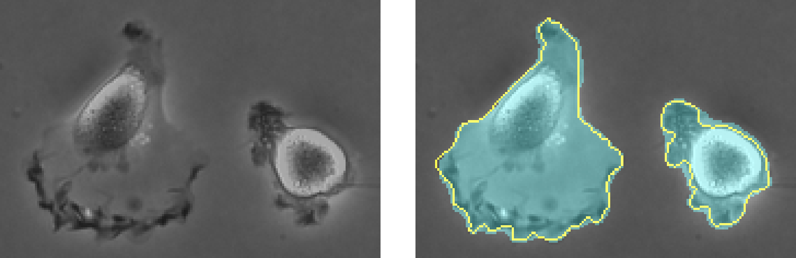
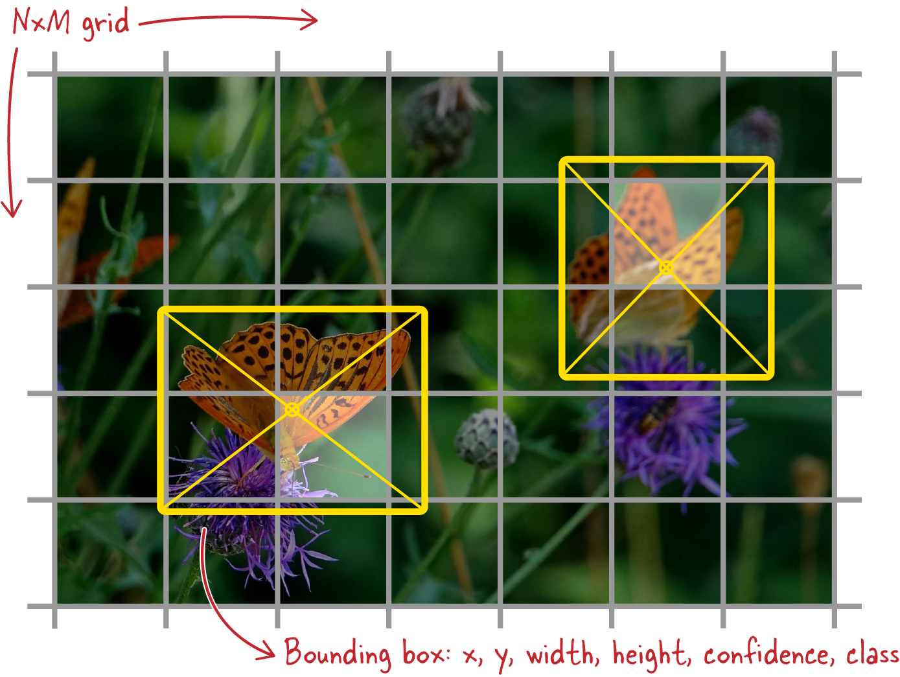
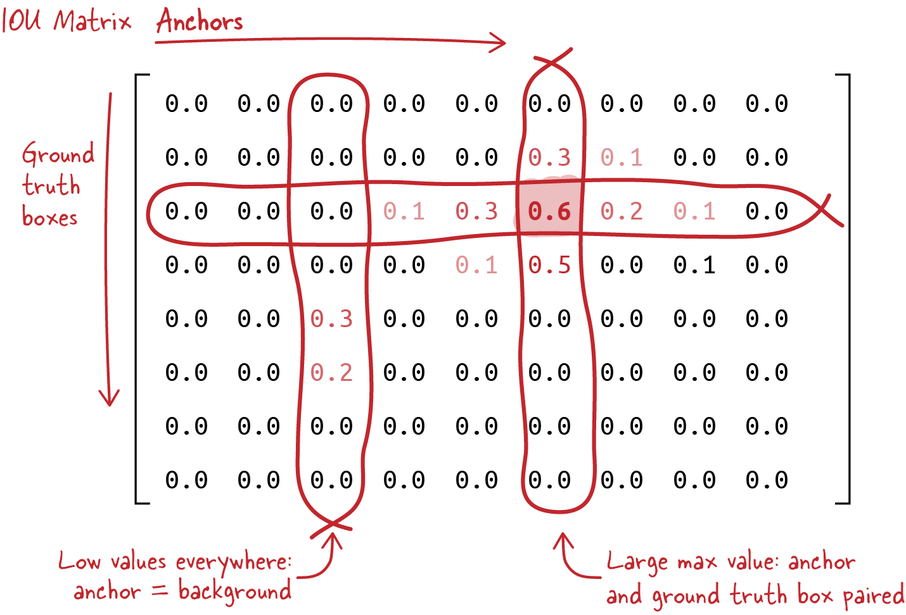
3-2. 통합 탐지 + 알림 트리거
📖 Practical ML for Computer Vision Ch.4 — 다단계 탐지 파이프라인 조건 결합 전략
위반 판정 함수 — YOLO(안전모) + MediaPipe+LSTM(행동) 병렬 처리:
def detect_violation(frame, yolo_model, action_model, keypoint_buffer,
helmet_threshold=0.5, action_threshold=0.7):
violations = []
annotated = frame.copy()
# 1. YOLO: 안전모 탐지
yolo_results = yolo_model(frame, verbose=False)
for box in yolo_results[0].boxes:
cls = int(box.cls)
conf = float(box.conf)
if cls == 0 and conf > helmet_threshold:
x1, y1, x2, y2 = map(int, box.xyxy[0])
cv2.rectangle(annotated, (x1, y1), (x2, y2), (0, 0, 255), 2)
cv2.putText(annotated, f'NO HELMET {conf:.2f}',
(x1, y1-10), cv2.FONT_HERSHEY_SIMPLEX, 0.6, (0, 0, 255), 2)
violations.append('helmet_violation') # 2. MediaPipe + LSTM: 행동 인식
keypoints = extract_keypoints(frame)
keypoint_buffer.append(keypoints.flatten())
if len(keypoint_buffer) >= 30:
sequence = np.array(list(keypoint_buffer)[-30:])
pred = action_model.predict(
sequence[np.newaxis, ...], verbose=0
)[0]
action_cls = np.argmax(pred)
action_conf = pred[action_cls]
action_names = ['정상작업', '허리위험', '고소위험']
if action_cls != 0 and action_conf > action_threshold:
label = f'{action_names[action_cls]} {action_conf:.2f}'
cv2.putText(annotated, label, (10, 30),
cv2.FONT_HERSHEY_SIMPLEX, 1, (0, 0, 255), 2)
violations.append(f'action_{action_names[action_cls]}')
is_violation = len(violations) > 0
return is_violation, violations, annotated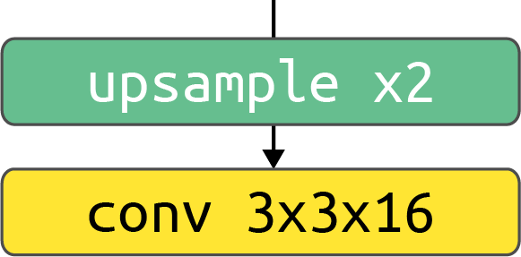
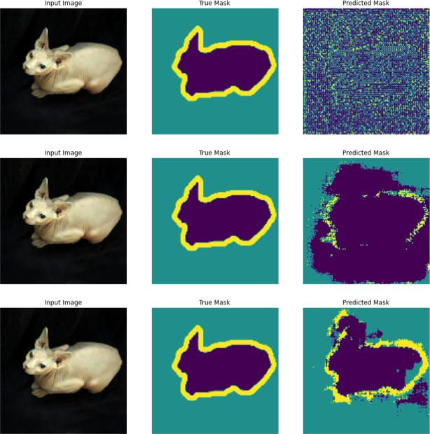
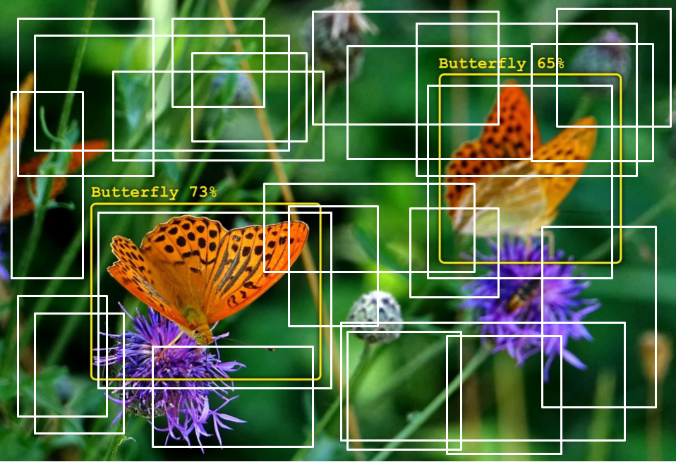
위반 이벤트 로깅:
import csv
from datetime import datetime
def log_violation(frame_idx, fps, violation_types, log_path='violations.csv'):
timestamp = frame_idx / fps
with open(log_path, 'a', newline='') as f:
writer = csv.writer(f)
writer.writerow([
datetime.now().strftime('%Y-%m-%d %H:%M:%S'),
f'{timestamp:.1f}s',
', '.join(violation_types)
])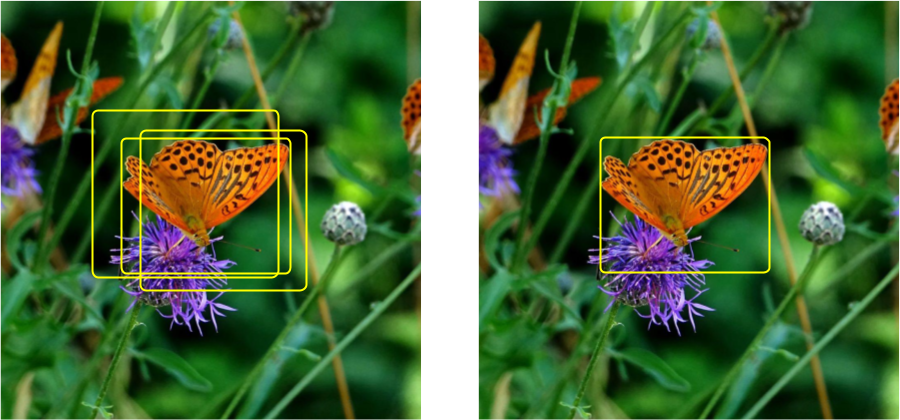
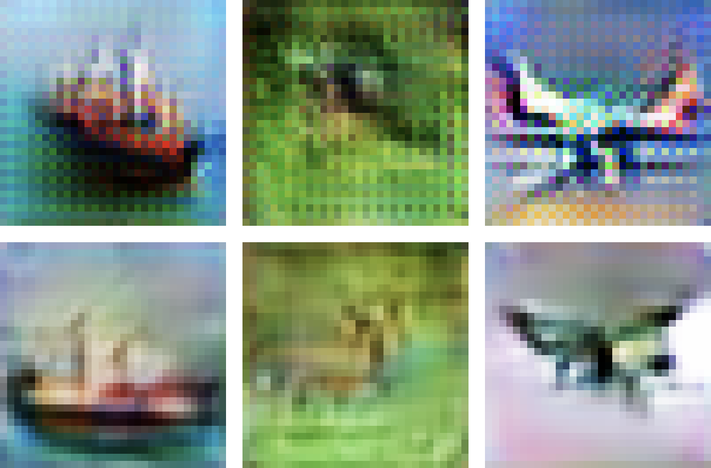
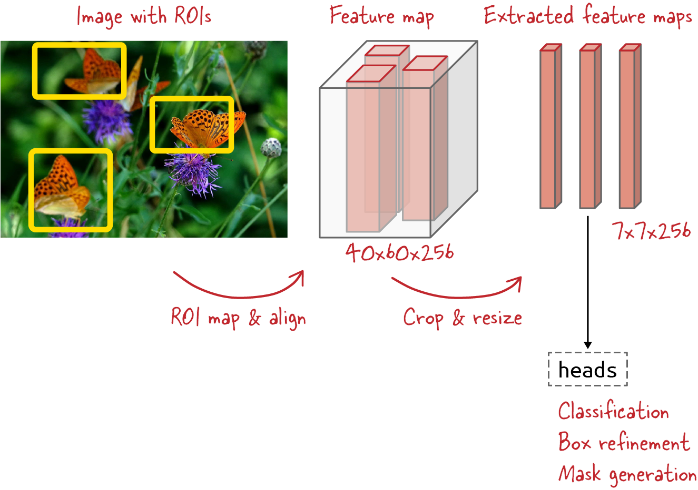
오탐 감소 전략: 연속 프레임 조건: 위반이 1~2프레임만 나타나면 오탐일 가능성이 높음. 연속 N프레임에서 위반이 지속될 때만 알림을 발생시키는 ViolationDetector 클래스를 구현하면 일시적 오탐을 효과적으로 제거할 수 있음.
3-3. 자유 실습
기본 — 파이프라인 실행 및 결과 확인:
- 샘플 영상(또는 합성 영상)으로 파이프라인 실행
- 위반 탐지 결과가 오버레이된 영상 저장
- 탐지된 위반 이벤트 수 출력
제출: 결과 영상 파일 + 위반 이벤트 수
중급 — 신뢰도 임계값 조정 실험:
- helmet_threshold를 [0.3, 0.5, 0.7]로 변경하며 탐지 이벤트 수 기록
- 임계값이 낮을 때 vs 높을 때 대표 프레임 비교
제출: 임계값별 탐지 이벤트 수 표 + "제조 현장에서 어떤 임계값을 선택할 것인가?" 한 문단
심화 — 위반 이벤트 로그 분석 대시보드:
- 위반 이벤트 로그(violations.csv) 생성
- 시간대별 위반 빈도 히스토그램
- 위반 유형별 비율 파이차트
- 위반 발생 시계열 (x: 시간, y: 누적 위반 수)
제출: 시각화 3개 + 분석 결론 한 문단
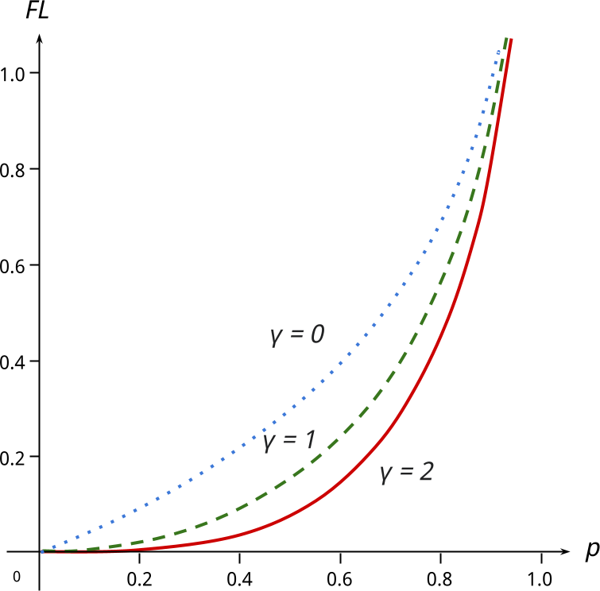
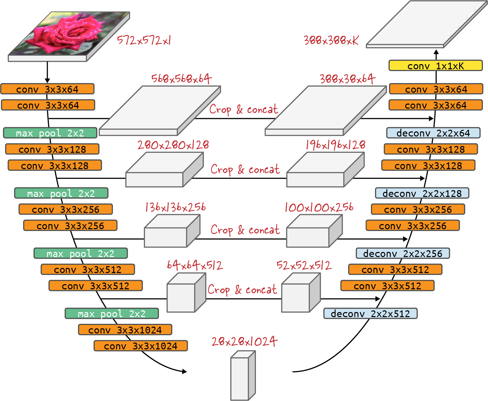

심화 학습 자료
섹션 1 — 모델 경량화와 엣지 배포
| 순서 | 챕터 | 핵심 내용 | 이유 |
|---|---|---|---|
| 1 | Appendix A | CNN 구조 이해, 연산량 기초 | 모델 선택의 배경 |
| 2 | Ch.14 | Object Detection 모델 진화 | 탐지 모델 이해 |
| 3 | Ch.6 | MobileNet, 속도 최적화 | 경량화 원리 심화 |
| 4 | Ch.15 | 엣지 디바이스 실제 배포 | 프로덕션 구현 |
양자화(Quantization)와 가지치기(Pruning)
| 방법 | 크기 감소 | 속도 향상 | 정확도 손실 |
|---|---|---|---|
| 동적 범위 양자화 | 4× | 2~3× | 미미 |
| Float16 양자화 | 2× | GPU에서 향상 | 없음 |
| 전체 정수 양자화 | 4× | 3~4× | 약간 |
| QAT (학습 중 양자화) | 4× | 3~4× | 최소 |
섹션 2 — 행동인식 심화와 데이터셋 구축
| 순서 | 챕터 | 핵심 내용 |
|---|---|---|
| 1 | Ch.5 | 비디오 라벨링, 데이터셋 설계 |
| 2 | Ch.11 | 골격 행동인식 심화, 3D CNN, 포즈 추정 |
비디오 라벨링 워크플로우: CCTV 영상 수집 → CVAT/Label Studio로 행동 클래스별 시작/종료 프레임 지정 → 데이터 증강(좌우 반전, 속도 변환, 가우시안 노이즈)
ST-GCN: 골격을 그래프로 표현하여 GCN으로 공간적 관계 학습. 관절 간 연결이 명시적으로 모델에 반영됨.
섹션 3 — 성능 평가와 실시간 최적화
| 순서 | 챕터 | 핵심 내용 |
|---|---|---|
| 1 | Ch.6 | 영상 전처리 파이프라인 |
| 2 | Ch.4 | YOLO 기반 다단계 파이프라인 설계 |
탐지 성능 평가: mAP(mean Average Precision) + IoU 기반 bbox 정확도. 안전 모니터링에서는 Recall 우선 (위반을 놓치는 것이 더 위험).
실시간 처리 최적화: 멀티스레딩으로 프레임 캡처와 추론을 병렬 처리. threading + Queue로 프레임 캡처 스레드와 추론 스레드 분리.